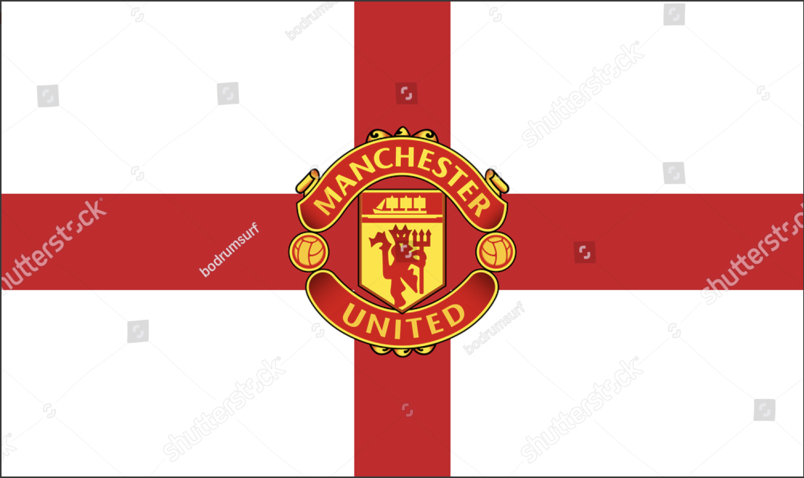
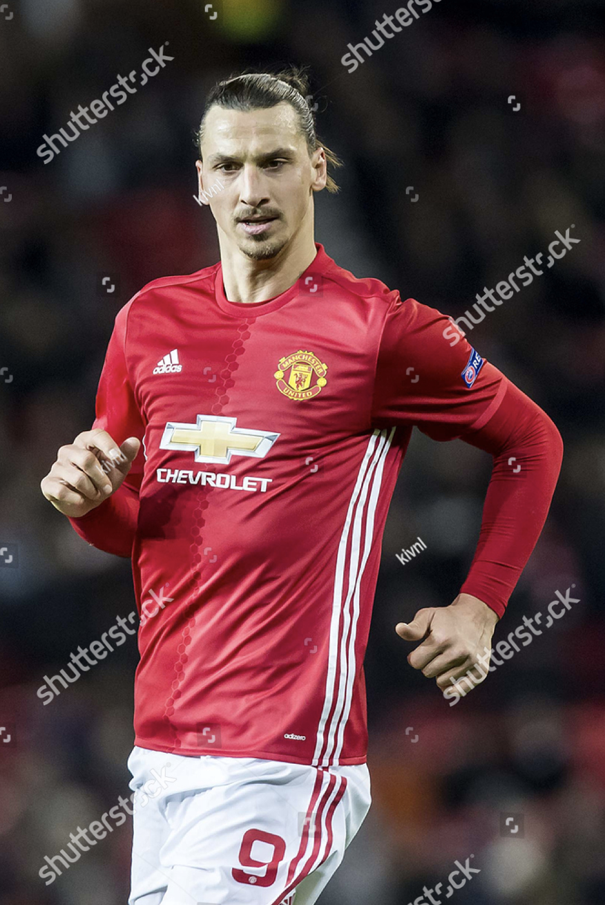

Soccer ⚽
Favorite Team
My favorite team is Manchester United. Manchester United Football Club is a professional football club based in Old Trafford, Greater Manchester, England, that competes in the Premier League, the top flight of English football. Nicknamed "the Red Devils", the club was founded as Newton Heath LYR Football Club in 1878, changed its name to Manchester United in 1902 and moved to its current stadium, Old Trafford, in 1910.

Manchester United have won a record 20 League titles, 12 FA Cups, 5 League Cups and a record 21 FA Community Shields. The club has also won three UEFA Champions Leagues, one UEFA Europa League, one UEFA Cup Winners' Cup, one UEFA Super Cup, one Intercontinental Cup and one FIFA Club World Cup. In 1998–99, the club became the first in the history of English football to achieve the treble of the Premier League, the FA Cup and the UEFA Champions League.`In 2016–17, by winning the UEFA Europa League, they became one of five clubs to have won all three main UEFA club competitions. In addition, they became the only professional English club to have won every ongoing honour available to the first team that is organised by a national or international governing body.
Favorite Player
My favorite player is Zlatan Ibrahimović. He is a Swedish professional footballer who plays as a forward for Manchester United. 
He was also a member of the Sweden national team from 2001 to 2016, serving as captain from 2010 until his retirement. Primarily a striker, he is a prolific goalscorer, who is best known for his technique, creativity, strength, ability in the air, and his powerful and accurate striking ability. He is currently the second-most decorated active footballer in the world, having won 32 trophies in his career